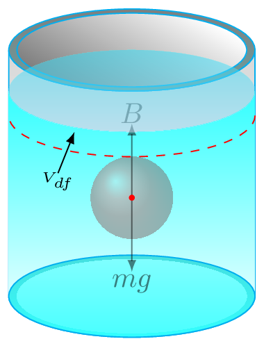

Fluid is a material that can flow. Gasses and liquids are fluids. To study fluid it is easier to deal with fluid's volume, density, and pressure rather than its mass and weight. For example, we do transaction of any fluids in terms of their volume (liter) not in their mass (kg). Here, some terminilogies are being introduced to study fluid and its behavior.
Density: It is defined as a mass per unit volume of the fluid. It is a scalar quantity.
\begin{align*}
Density \amp = \frac{Mass}{Volume}
\end{align*}
\begin{equation}
d = \frac{m}{V}\tag{4.2.1}
\end{equation}
Its unit is \(kg /m^3\) in SI system, \(g/cm^3\) or \(g/ml\) in cgs system, and \(slug/ft^3\) in fps system. Any two objects of identical volume the heavier one has higher density than the other. Take two marbles of same size but one is a lead marble and another is a glass marble. Which one do you feel heavier, has the higher density.
Example4.2.1.
Calculate the mass of water in a container of size 25 cm long, 15 cm wide and is filled with water up to 10 cm high. If the density of water is \(1g/cm^3\text{.}\)
\begin{align*}
V \amp = length\times width\times height\\
or, \quad V \amp = 25 cm\times 15 cm\times 10 cm\\
\therefore V \amp = 3750 cm^3
\end{align*}
Hence, the mass of water in the container is given by (4.2.1).
\begin{align*}
m \amp = d\times V\\
or, \quad m \amp = 1 g/cm^3 \times 3750 cm^3\\
\therefore V \amp = 3750 g = 3.75 kg
\end{align*}
Pressure: It is defined as a force per unit area of the surface. Force must be acting perpendicularly on the surface. Pressure defines how hard the object is pushing something in or out. It is a scalar quantity.
\begin{equation}
p = \frac{F}{A}\tag{4.2.2}
\end{equation}
Its unit is \(N/m^2\) or pascal (Pa) in SI system. In FPS system of unit it is measured in \(psi\) which means pounds per square inch. Many units of pressure are still in practice such as torr, bar, mm of Hg., atm., etc. 1 atm is one atmospheric preesure, \(1 atm=1.013\times 10^5 Pa.\)
Example4.2.2.
How much pressure is applied on the ground by a girl of 50 kg if she is balancing herself by standing on her one shoe heel of area \(1 cm^2\text{.}\)
A fluid exerts more pressure at greater depths. Consider a cylinderical water bottle of area of cross-section \(A\text{.}\) If \(m\) is mass of water filled in the bottle to the height \(h\text{,}\) then from (4.2.2), we have -
\begin{equation*}
p = \frac{F}{A} = \frac{mg}{A} =\frac{Vdg}{A} =\frac{Ahdg}{A} =hdg
\end{equation*}
\begin{equation}
p= hdg\tag{4.2.3}
\end{equation}
Here, \(V\) is the volume of fluid in a container, \(d\) is the density of the fluid, and \(g\) is acceleration due to gravity.
Example4.2.3.
If you poke two holes in water bottle at different hights, which water-jets shoots out to larger distance from the bottle?
The pressure exerted by water at depths is given by (4.2.3),
\begin{equation*}
p= hdg
\end{equation*}
Since depth of water is more for the hole at the bottom, water exerts higher pressure at the bottom and hence water-jet shoots out to further distance from the bottom hole.
Subsection4.2.1Archimedes' Principle
When an object is placed in a fluid it experiences an upthrust force called a buoyant force. It is arising due to changes of pressure inside fluid. This phenomenon is known as Archimedes' principle. It states that when a body is fully or partially immersed in a fluid, the fluid exerts an upward force on the body equal to the weight of liquid displaced. That is, a buoyant force (\(B\)) = weight of displaced fluid (\(w_{df}\)).
It is the buoyant force due to which your weight feels less in sweeming pool. Actually buoyant force is the loss of weight of object in a liquid or fluid. It can also be defined as
Here, \(w_{a}\) is a weight of an object in air and \(w_{l}\) is a weight of an object in liquid. Archimedes' principle tells whether the object floats or sinks in the fluid. If weight of the object is greater than the buoyany force, it sinks. If its weight is equal to the buoyant force, it submerges inside the fluid but does not sink. If its weight is less than the buoyant force then it floats on the surface of liquid.

Figure4.2.4.Buoyant force
In this case, volume of displaced liquid is equal to the volume of submerged portion of the object. On this basis, we can tell that if the density of an object is greater than that of fluid, it sinks. If object density is equal to the density of fluid, then object submerges. If object density is less than the density of fluid, then object floats. To make iron ship not to sink in water, it is made with wide surface area and its body is like a hollow shell, so that the density of entire ship is less than the density of water.
Subsection4.2.2Kinetic Theory of Gases
The nature of gas is completely different than solids and liquids. Gas tskes up the entire volume of the container and can be compressed easily. Gas pressure increase or decrease as the temperature of the container change. It diffuses (or leaks out) to air if the container is left open. On such experiences, Kinetic theory of gas is developed to explain the nature of heat and the motion of particles associated with heat energy. According to this theory, gas is composed of large number of very tiny particles called molecules. These molecules are always in random motion with all possible directions and speeds which increases with the increase of temperature. In gases, the molecules are very far away from each other than in solids and liquids and have negligibly small force of attraction between them. Hence they can move freely anywhere within the available space. This explains why a gas has no definite shape and size. To understand the more general behavior of gases kinetic theory of ideal gases is postulated as
All gases are made up of molecules. Molecules are identical, rigid, and perfectly elastic moving in random directions with all possible velocities.
The molecules are very far away from each other but they collide with each other and with walls of the container.
All the collisions are elastic, but time spent during each collision is negligibly small compared to the time spent between the collisions.
Molecules do not interact with each other (no intermolecular force of attraction) except during a collision.
The average kinetic energy of the molecules of any gas depends only on the temperature.
Ideal gas is a hypothetical gas of negligible molecular size and have no interactions among their molecules. In practice, a very dilute gas with extremely large volume of container space can be considered as an ideal gas. Remember the real gas molecules has definite size and may interact with each other. Hence this postulates are just a very simplified model to understand gas laws and need modification for real gas behaviors. To experience the general behavior of gas please play with simultion link here. gas laws 1
Subsection4.2.3The Gas Laws
From the experience of factors affecting the gas pressure ideal gas law is defined below. Ideal Gas Law or also called equation of state. It is found that the pressure, \(p\) of the gas is directly proportional to number of molecules, \(N\) and the absolute temeperature, \(T\) and inversely proportional to the volume, V of of the gas. That is
\begin{align*}
p \amp \propto \frac{NT}{V} \\
p \amp = \frac{NkT}{V}
\end{align*}
where \(k\) is proportionality constant. Therefore
\begin{equation}
p V = NkT\tag{4.2.6}
\end{equation}
For \(n\) mole of gas, the above equition turns into